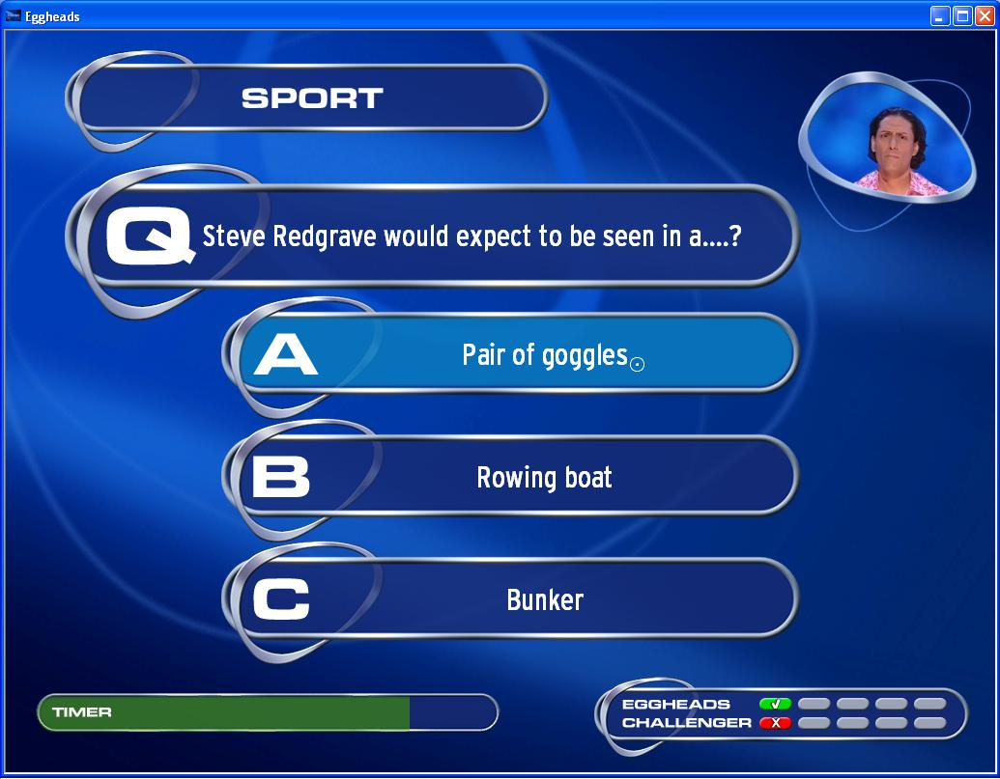
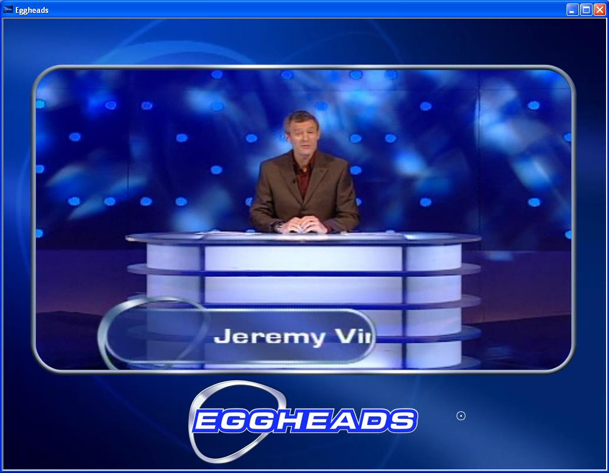

Eggheads

Question screen

Video render
Whilst this game didn't require any involved graphics programming it did require sound effects be created from audio from the shows. This was done using audio tools such as Goldwave.
The game required development of libraries and supporting tools to pack images for use alongside question databases. For obvious reasons I can't go into the details of the encryption used or PAK formats but tools allowed creation and extraction of PAK files and linking to other databases along with use of XML files to specify sub images for flexibility. The tools and libraries were developed for use by other programmers on other projects.
<< Back